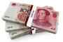

Mr. Luthra is an author and artist who writes about news, fitness, culture, and anything else that meets his interests. If you like his style, visit The Straightforward Voice, where you can find more FREE content.


Long ago, I remember playing a game called Final Fantasy 12. It was an role-playing game with great visuals, but one peculiar thing I noticed was a certain obstacle later in the game. When you arrive at The Imperial City of Arcades, an advanced society reserved only for the upper class, you find that you are unable to take a taxi to access the more exclusive areas privileged for the elite and royalty unless you have earned enough “Chops”, which was basically social credit system that signified that you were an “upstanding citizen of the Empire”. It was carried as a mark of high status, a writ to transit. The alternative was to pay a sum of a million Gil (money) just to get a ride.
So instead of being able to continue directly on your journey, you are sidetracked on a silly sub-quest where you have to run around and talk to strangers to see whether they have any problems you can help them with. Tasks range from remembering and repeating tales, fetching tools, and so on. The whole thing was unnecessary, and very stupid. I remember shaking my head hoping such a system never happens in the real world. Well, that fear has now come true in 2018.

High-tech communism has arrived in Rongcheng, China, as they have launched a social credit system which gives citizens points for following the law and doing “good deeds”. If they fail to obey, they lose points, if they conform, they earn points which can qualify them to receive perks such as renting public bikes free for a while, Winter heating discounts, and better rates on bank loans. Businesses can also get good scores for paying taxes on time.
By 2020, the government plans to roll out a full blown national social credit system, and this has given rise to fears of losing personal freedoms. According to the system’s founding document, released by the State Council in 2014, the scheme should “allow the trustworthy to roam everywhere under heaven while making it hard for the discredited to take a single step.”
A report titled China 2030, written by government officials of The Development Research Center of the State Council, the People’s Republic of China, and The World Bank says, “the government will need to transform itself into a lean, clean, transparent and highly efficient modern government that operates under the rule of law.” It discusses everything from minimum wage, to patent filing. This document openly expresses the totalitarianism planned by the Chinese government. It is all part of a massive social experiment to rank and monitor citizens.
Just like how you are evaluated based on your FICO score, in China they are also judged on their social credit score. The government says it is being done to increase the “trustworthiness” of people in the country.
As humans, we all go through our emotions and sometimes say things we don’t really mean. Online however, whatever is said becomes permanently recorded in digital history, and when a customer leaves a bad review, some owners can take it too far. In one case, an owner traveled 850km to beat up the woman who gave his business a negative review, because it costed him 12 points on Alibaba’s system.
This system in China takes it much further. If you get a traffic ticket, you lose five points. If you commit “heroic” acts, do good business, and help others who are in tough circumstances, you can get 30 points. You can also earn credit by donating to charity or volunteering for the city’s program.
He Junning, the deputy director of the Rongcheng Social Credit Management Office, said, “anything that influences your points needs to be backed by official facts with official documents.” People can receive grades ranging from A+++ to D. Things like drunk driving, however lowers your score to a C.
For people like Yu Guanqing, it is making his life much harder to apply for a house loan as “It’s too troublesome.” China has been trying such tactics since the communist take over, but now they have launched this microcosm which could very well be the model of what may come in the near future.
Read More: China Is Poised To Surpass The United States As The World’s Biggest Superpower